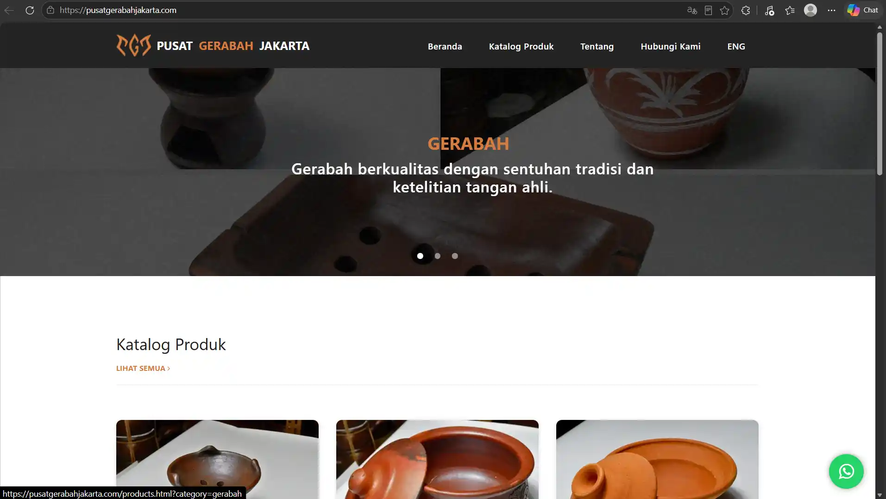
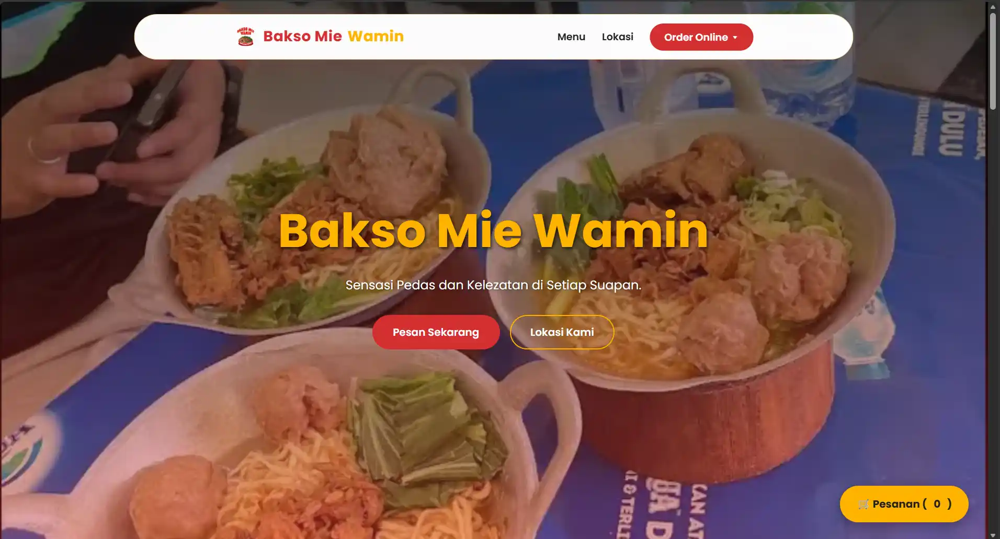

Kumpulan proyek digital — dari sistem manajemen katalog dinamis hingga otomatisasi alur pemesanan. Setiap baris kode ditulis untuk menjembatani fungsi teknis dengan pengalaman pengguna yang mulus.

Katalog Dinamis · UMKM
Mendigitalisasi lebih dari 200 produk ke dalam katalog interaktif berbasis JSON. Dilengkapi filter, fitur alih bahasa, dan order WhatsApp.

E-Menu · Otomatisasi Order
Website pemesanan interaktif dengan sistem dine-in, take away, dan delivery, serta pembayaran QRIS terintegrasi tanpa biaya payment gateway.
Web Development · E-Commerce
Website company profile responsif yang dirancang sebagai solusi digital menyeluruh untuk UMKM. Menjawab tantangan klien dalam mengelola inventaris yang besar, saya membangun sistem katalog dinamis berbasis JSON untuk lebih dari 200 produk. Katalog ini dirancang sangat interaktif dengan fitur pencarian nama dan filter kategori. Sesuai dengan spesifikasi klien, saya juga mengimplementasikan fitur alih bahasa (ID/EN), integrasi pemesanan langsung via WhatsApp, serta optimasi SEO menyeluruh untuk meningkatkan visibilitas bisnis di pencarian Google.
E-Menu · Otomatisasi Order
Bakso Mie Wamin membutuhkan sistem pemesanan digital yang praktis namun tetap terjangkau. Saya mengembangkan website menu interaktif yang memungkinkan pelanggan memilih produk, mengatur jumlah pesanan, serta menyesuaikan metode layanan (dine-in, take away, atau delivery). Sistem secara otomatis meminta informasi yang relevan, seperti nomor meja untuk dine-in atau alamat pengantaran beserta lokasi Google Maps untuk delivery. Sebelum pesanan dikirim ke WhatsApp, pelanggan diarahkan ke halaman checkout yang menampilkan QRIS sebagai metode pembayaran. Solusi ini memberikan pengalaman pemesanan yang lebih profesional tanpa biaya tambahan untuk payment gateway.